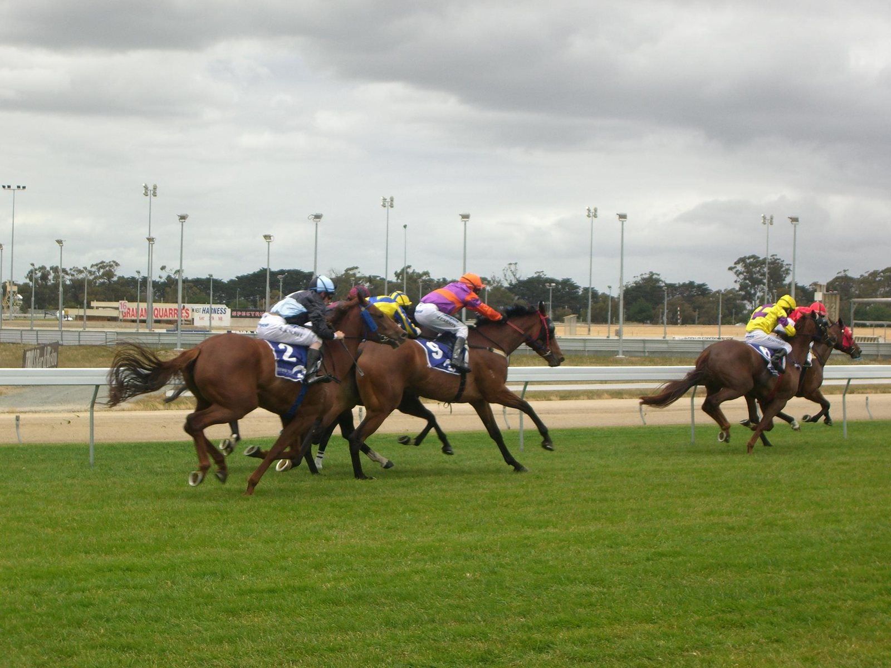

Musical Times sale del tráfico y gana la Fillies' Mile (G1) por un cuerpo
La potranca de Godolphin, preparada por Appleby y montada por William Buick, mantuvo el invicto el viernes en Newmarket tras quedar encerrada en la recta y remontar hasta batir a Haven.

Salió como favorita a 4-9 y viajó cuarta, al acecho de la cabeza, hasta que en el último cuarto de milla se vio atrapada entre caballos y cayó a la sexta plaza. William Buick encontró hueco desde el poste del último furlong y la hija de Lope De Vega aceleró para imponerse por un cuerpo a Haven (Wootton Bassett), ganadora de su maiden en Dundalk y preparada por Aidan O'Brien. A tres cuerpos y medio, Forbidden Fire (No Nay Never) se quedó con el tercer puesto en una foto a tres.
Fue una victoria trabajada para Musical Times, que el mes pasado había ganado el May Hill (G2) de Doncaster sin oposición. "Tras dos furlongs tuvimos que contener un poco la respiración", admitió Appleby. "William iba en la potranca con más clase de la carrera y lo sabía. El resto corría para batir a una sola".
El preparador apuntó al terreno: "Veía la bajada por primera vez y probablemente quería un piso más blando. Creo que es una actuación que se puede valorar al alza".
El plan pasa por el 1.000 Guineas, sobre el mismo recorrido y para el que ya figura como segunda favorita en las apuestas anticipadas. "Seguramente vendremos aquí a un galope de pista y luego, ojalá, a las Guineas", dijo Appleby, que ya recorrió ese camino con Desert Flower: ganó esta prueba en 2024 y el 1.000 Guineas al año siguiente. "Ahora mismo es una millera de pies a cabeza, con mucha velocidad natural, aunque quizá pueda ir más lejos", añadió el preparador.
Haven se quedó a un cuerpo de dar a O'Brien su octava Fillies' Mile, que habría ampliado su récord. "Es solo una niña y progresa de maravilla. Creo que es una potranca de Oaks, de milla y cuarto y milla y media", valoró el irlandés.
Musical Times es el segundo producto de Dubai Fountain (Teofilo), ganadora del Cheshire Oaks (Listed) y segunda en el May Hill y el Sweet Solera (G3), y la única ganadora de sus tres crías.
Por Martín Larrañeta